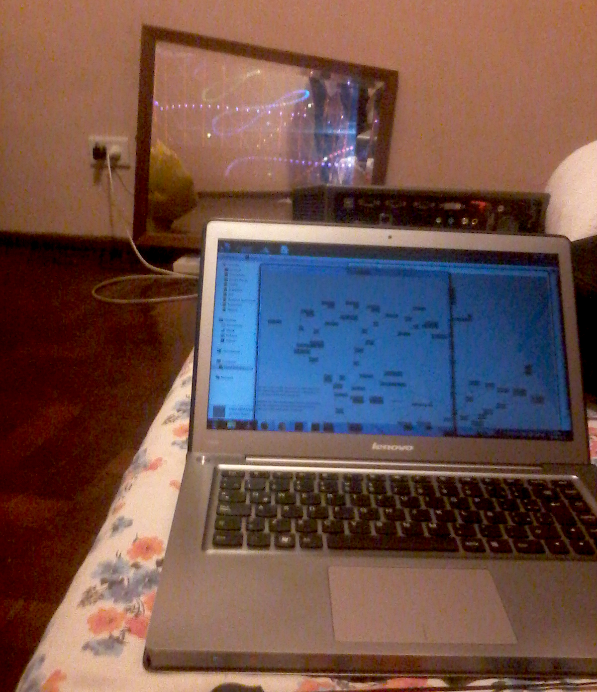
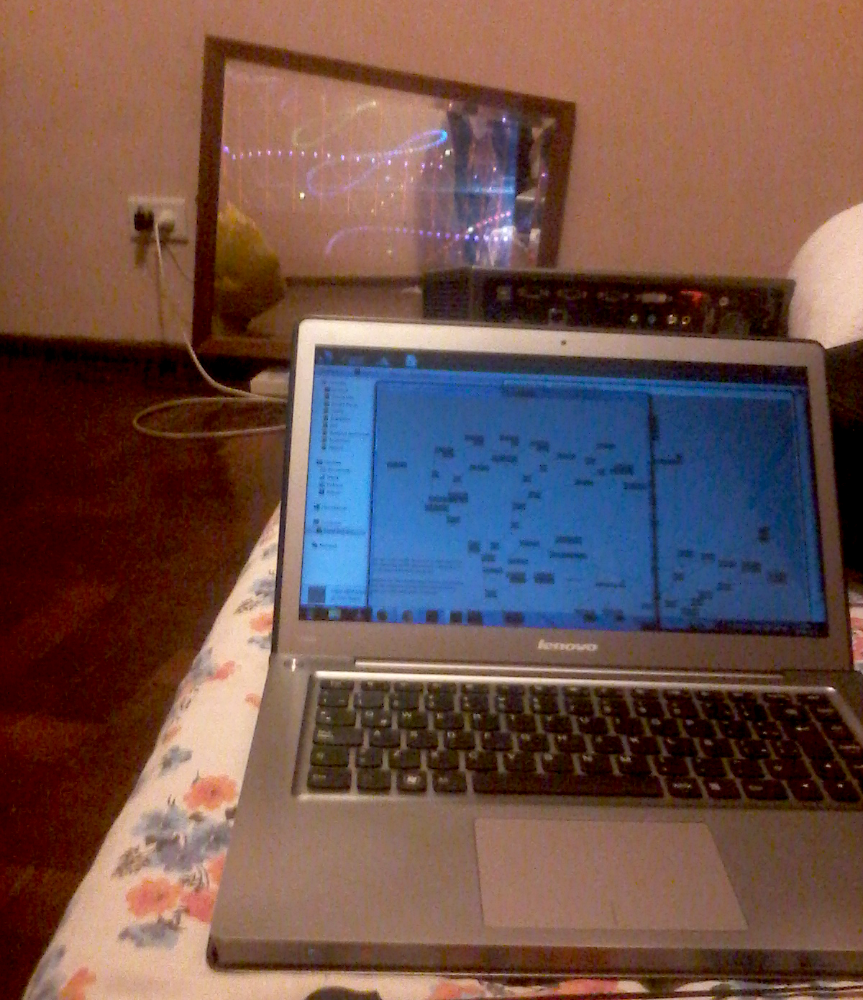
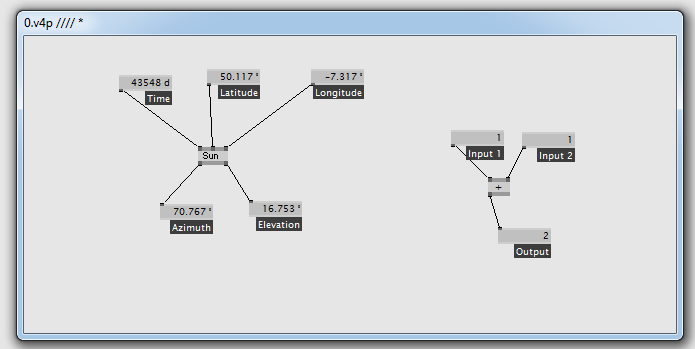
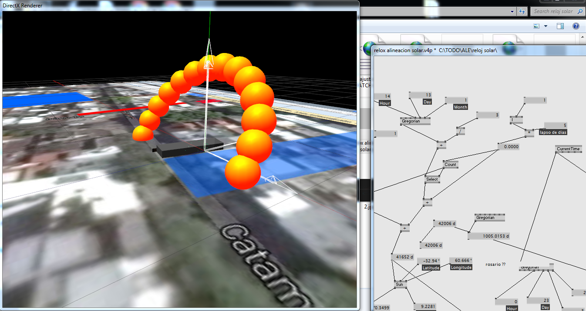
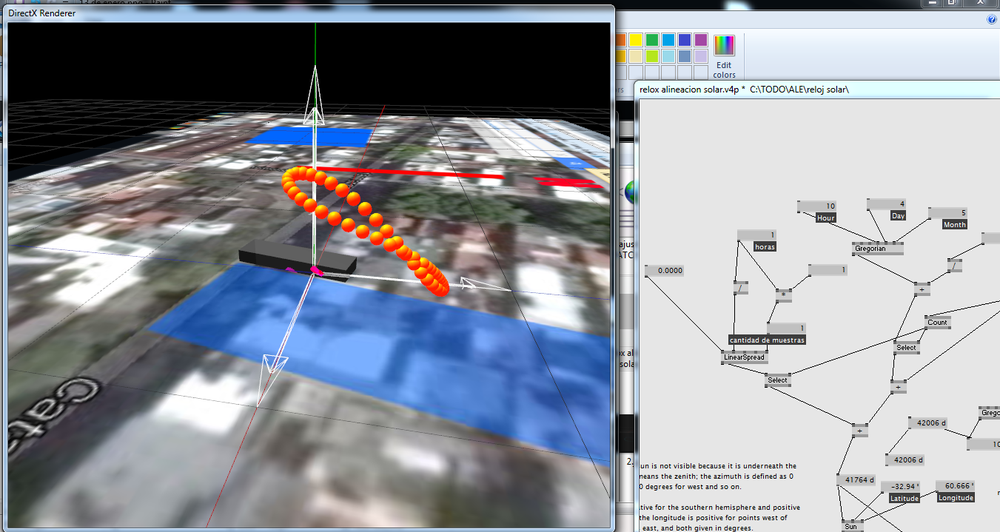
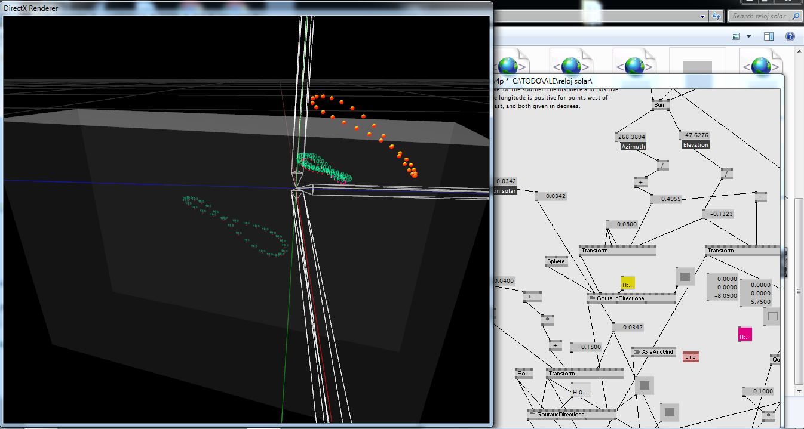
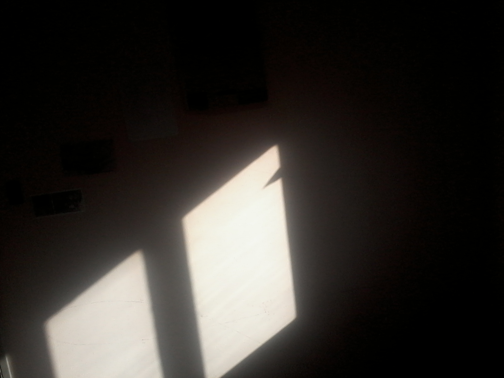
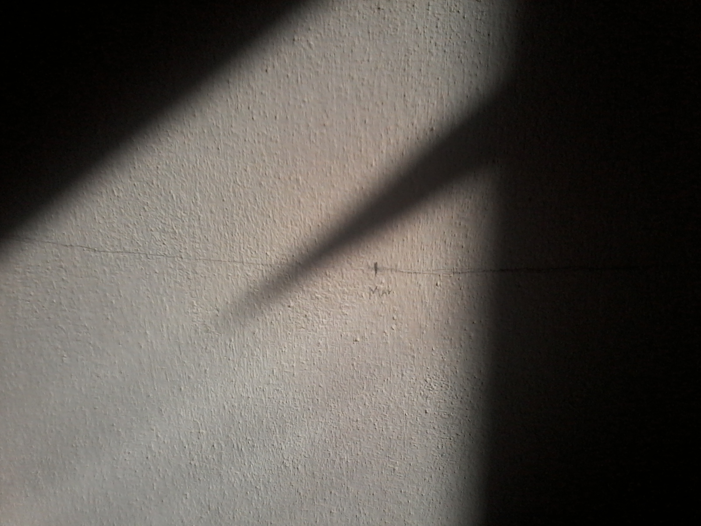
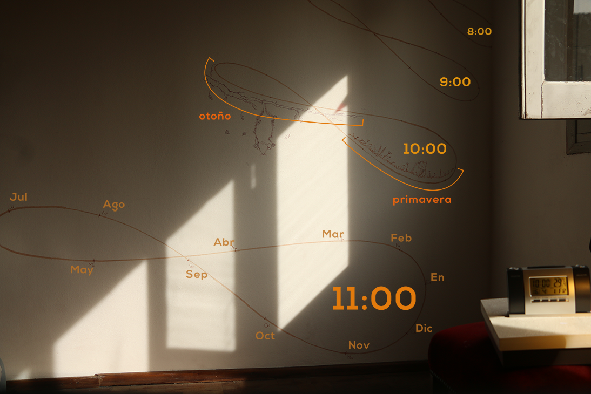

Un Reloj de Sol, caserito caserito
 

En sexto grado le conté a un amigo que me despertaba con un rayo de sol que se filtraba por la persiana y me daba justo en los ojos, todos los días. Por supuesto que era mentira. Pasó una vez y en el momento sentí la necesidad de agrandar la anécdota. El sol pasa por un camino un poco distinto cada día. A las nueve de la mañana de octubre pasa por la cama, a las nueve de la mañana de noviembre pasa por la mesa de luz.
Que tán difícil puede ser saber exactamente por donde van a pasar los rayos del sol?
Encaré el proyecto usando la misma herramienta que usé muchas veces para hacer instalaciones audiovisuales interactivas. Es un lenguaje visual de programación llamado Vvvv. Entre muchas otras cosas tiene un patch 'Sun', que si toma como ínput un tiempo determinado, latitud y longitud, y te díce donde va a estar el sol en ese momento
directo de la Wiki:

Con eso hice un modelo que muestra dónde va a estar el sol en determinados momentos
Por ejemplo, este va a ser el recorrido que hace el sol un 13 de marzo
En vez de ver donde va a estar el Sol en cada hora de un día, se puede ver dónde va a estar el Sol cuando sean las 10:00 a lo largo de todo el año.
A medida que pasa el año, se dibuja una forma sublime. Un infinito. Ese es el dibujo oculto que va a seguir haciendo el sol a lo largo de los milenios.
Sabiendo la posición del sol, y la de la pared, falta calcular donde van a caer los rayos del sol, o mejor dicho, la sombra
Pegué un papelito en la ventana para que haga de indicador o 'gnomón'
  El reloj solar terminado muestra la hora y la fecha 